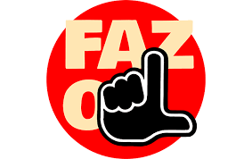
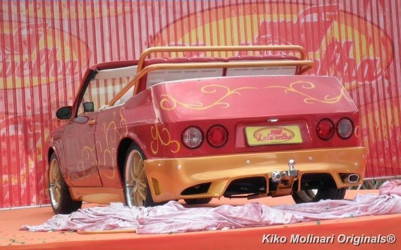
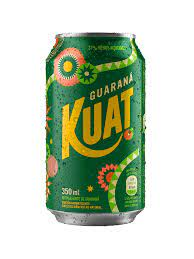
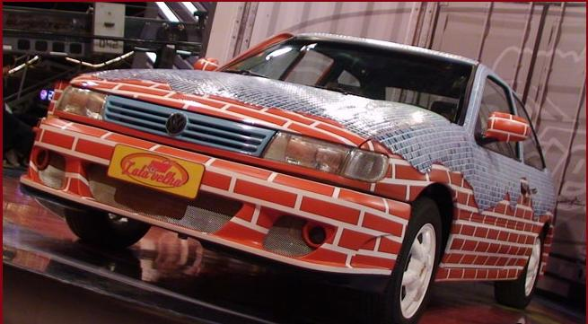

- Os Melhores Carros do LATA VELHA
TOP MELHORES CARROS DO LATA VELHA
Todos sabemos que Luciano Huck adora humilhar pobres em troca de audiência. Restaurando seus veículos automotores por alguns desafios ao invés de simplesmente doar.
Vamos ver os veículos modificados pelo mestre Luciano Huck.

Fiat 147 Limusine
6 Rodas
Para que ficar de 4, quando pode ficar de 6

Brasilia L Trenó

Papai Noel
HO HO HO HO

Fiat 147 denovo
só que Marquinhos
KATIAU


E FINALMENTE O
O MASTER BLASTER
PEDREIRO MÓVEL
Volkswagen Logus GLSi
